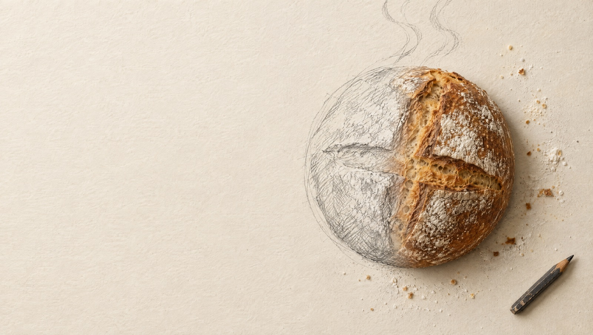
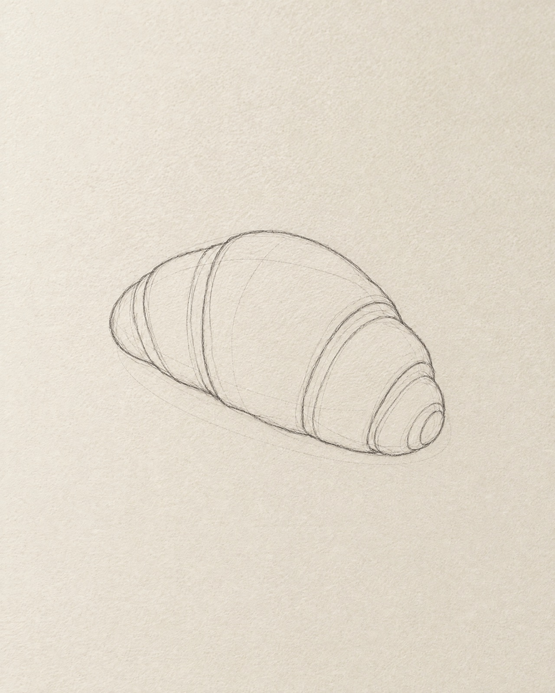
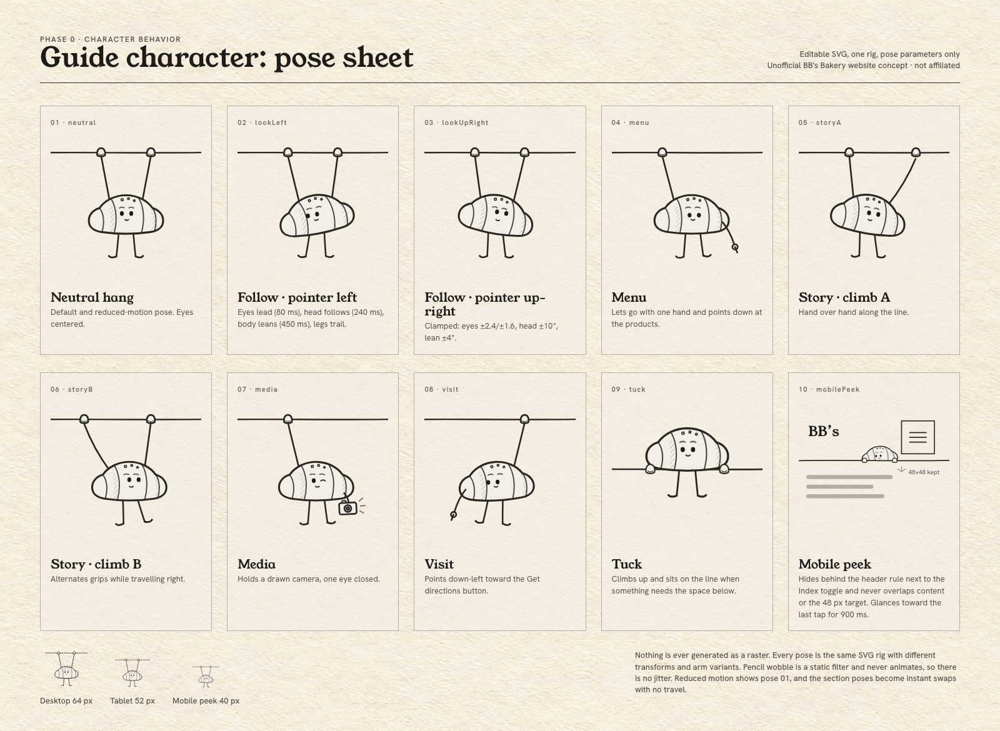
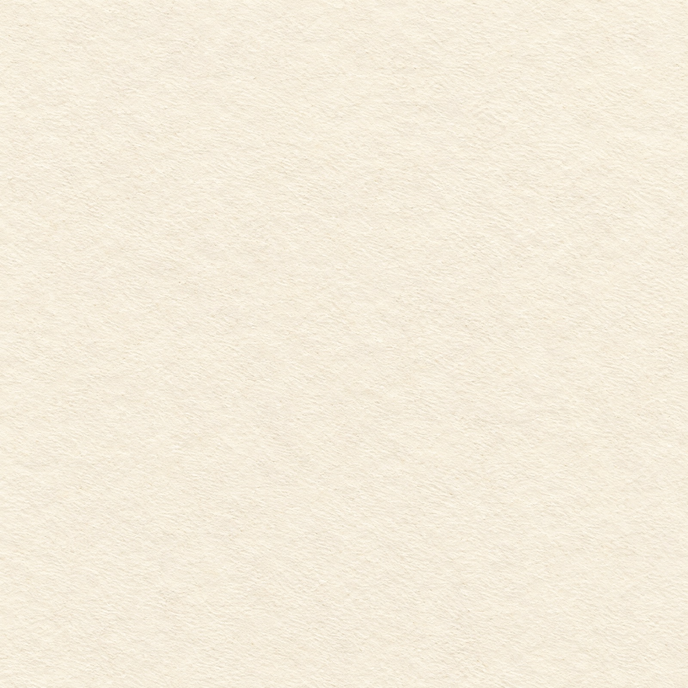
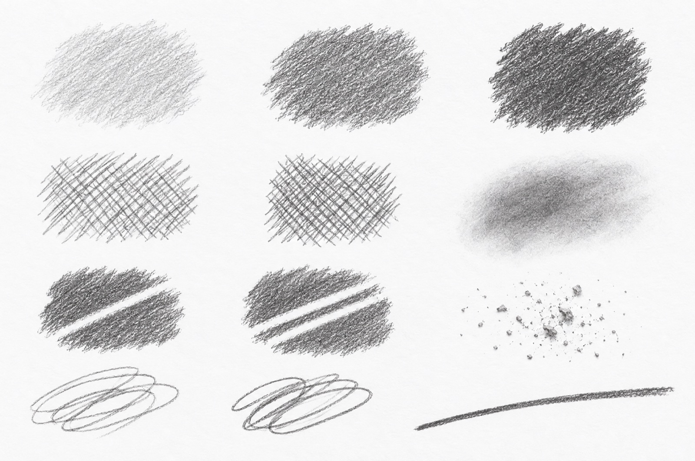
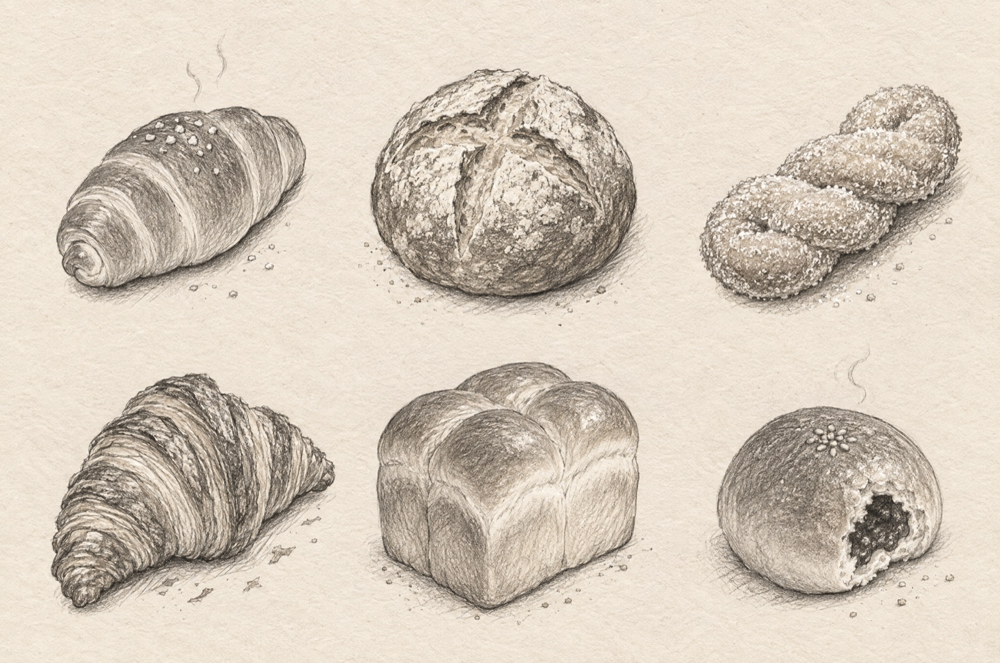
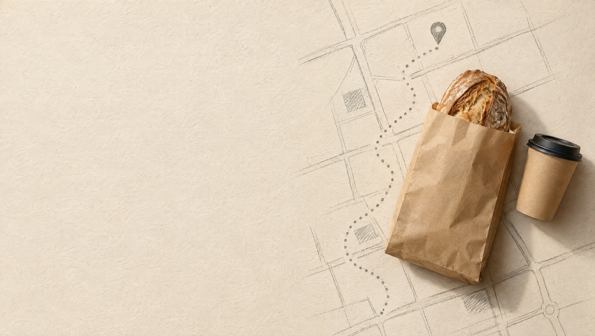

Concept imageBakery · Coffee & Tea · Los Angeles
BB’s
Bakery
Bakery
Handcrafted bread, baked fresh every day.

Concept imageHandcrafted bread, baked fresh every day.
Graphite 400 #8A847B (3.2:1) is for lines and crop marks only, never text. Bread photography is the only warm color.
03 · Type
Concept sketch Concept sketch
Concept sketch Concept image
Concept image
Hangs from the nav line. Eyes 80 ms · head 240 ms · lean 450 ms · legs on a damped spring. Clamped, never jittery.

Concept texture
Concept texture
Concept sketchunderline · underline alt · circle-around · arrow · steam · crop marks. Variants swap per state change; nothing boils.
No pills, no glass, no gradients. Focus: 3 px graphite outline, 3 px offset, always visible. "Sold out" and "Preorder" are designed now but only render from real owner data.
 Concept image
Concept image
Concept image